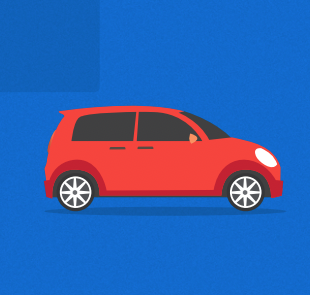
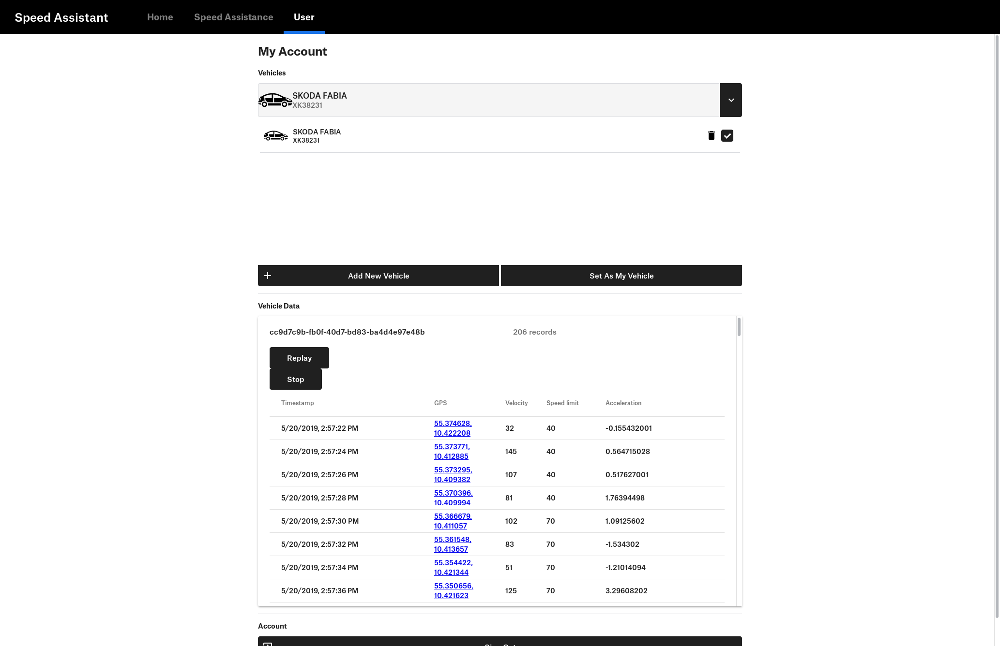
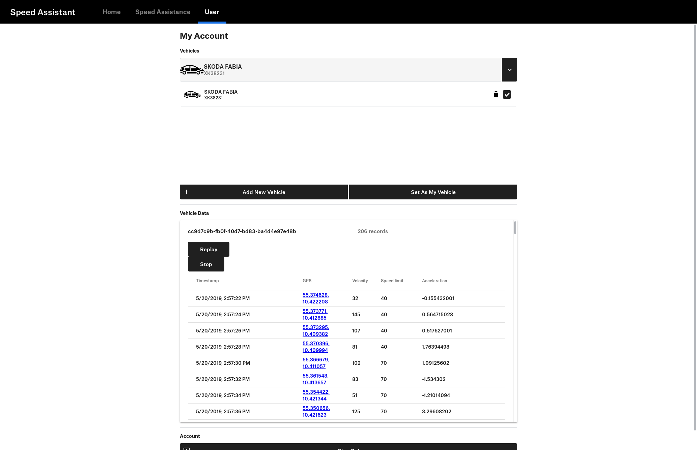

4th Semester Project
The objective this project is to develop a web based user interface to an industrial process. The development of the project has happened alongside other courses which contributes to the crucial expertise and finesse for this project. The purpose of the system is to collect vehicle data, so the system use the velocity of the vehicle, location of the vehicle, and the speed limit of the road, to enhance the road safety, by alerting the user of the system when they are speeding. The system is built with a software solution combined with pieces of hardware. The main hardware is an Arduino that contains a GPS component that calculates the GPS coordinates and reads the vehicle data for processing at the backend server. The backend saves the data in a database for historical reasons and sends it further to the website for clients to view. The user interface must be able to update the process of the industrial process and allows the user to interact with it to change relevant parameters or control the process. The features that clients of the system can make use of are registering, login, managing vehicles, view live and archived data, perform administrative tasks, and most importantly use Intelligent Speed Assistance (ISA). Furthermore, the project course utilises Scrum as a foundation for an agile soft ware development that is split into multiple sprints. The development began with finding the problem domain, requirements and creating use-cases for the system to define the scope that will later lead to the design phase. It can be concluded that it is feasible to implement such a system, and that the group has gained new knowledge of dealing with embedded hardware, advanced software architecture, web development, and how they all can work together using web based APIs and message queuing technologies. Preface
 
